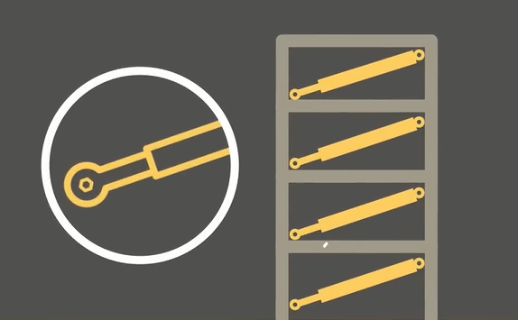

Thijs van der Klein
Alle huidige maatregelen die worden gebruikt, worden goed uitgelegd (samengevat) in de onderstaande video van RTL nieuws. De rest van de pagina legt de concepten extra uit, en gaat iets meer de diepte ermee in.
Video 1
Uitleg video over aardbevingsbestendig bouwen, gemaakt door RTL nieuws
Houtbouw & lichte constructies
Wellicht de beste manier is het bouwen van een lichte constructie, met genoeg mogelijkheden daarin om energie (bewegingen) over te kunnen dragen zonder dat ergens een ophoping plaatsvind. Zoals bij de tweede wet van Newton.
Kracht = massa ∙ versnelling
Niet gek dus, dat een lichtere constructie tijdens aardbevingen vaak wint van hele zware constructies. In tegenstelling tot wat veel mensen denken is houtbouw niet een houtenblokhut, zoals je die ziet in de Alpen. Een houtbouw huis heeft vaak alsnog stenen
muren, en een betonnen vloer. Alleen de constructie zelf is van hout, in plaats van of staal of beton. Hierdoor behoudt enige flexibiliteit. Hierbij spreken we over een combinatie tussen tradionele bouw, en houtskeletbouw. Omdat een
totaal huis van hout ook weer diverse problemen met zich meebrengt, zoals veel arbeidsintensiever en enorm gevoelig voor vocht. Daarom wordt er vaak gekozen voor een combinatie, het beste van beide markten voor een goede bescherming.
Houtskeletbouw kan de totale massa met wel 66% doen afnemen in vergelijking met een normale stenenhuis (janssen-bouw.nl, 2022).
Afbeelding 1
Houtskeletbouw
Voordelen aan houtskeletbouw zijn onder andere de snelle manier van bouwen, je hoeft niet te wachten totdat bijvoorbeeld het beton genoeg is uitgehard. Daarbij komt dat het een stuk energiezuiniger is omdat hout goed isoleert. Daarnaast is de bouwmethode
ook nog eens duurzaam, omdat je voornamelijk gebruik maakt van producten die in de natuur voorkomen. Ten slotte is het bouwen van een houtskeletbouw huis veel minder arbeidsintensief doordat het dichtmaken sneller gaat door het gebruik
van grotere materialen. Meer lezen over duurzaam bouwen, we hebben er al eens eerder over gepraat, lees dat verslag hier terug
klik hier om het te lezen.
Extreem sterk bouwen
Een totaal andere manier is het extreem sterk bouwen. Dit verklaart zichzelf eigenlijk al, door de gehele constructie te vergroten en te verzwaren kan het meer energie opnemen en krachten adsorberen voordat het gaat scheuren of breken. Dus, hoe sterker
het gebouw is, hoe meer krachten het kan opnemen. Maar, hierin speelt de eerder genoemde tweede wet van Newton wel een probleem, want hoe zwaarder het gebouw hoe meer krachten er spelen. Ondanks dat extreem zware stalen en betonnen
constructies wel voorkomen, zijn ze minder gebruikelijk. Meestal, wordt er gekozen voor een stalen constructie, licht maar ook enorm sterk. Om beton nog sterker te maken wordt er extra bewapening (stalen constructie dat het beton bij
elkaar houdt) toegepast, omdat het beton dus zijn eigen gewicht moet compenseren met sterkte, worden alle stukken ook nog eens los van elkaar aan elkaar gestort. Waardoor ook de verbindingen extra sterk worden.
Afbeelding 2
Verschil tussen klassiek en aardbevingsbestendig bouwen
Een nadeel van deze manier van beschermen is dat het enorme hoeveelheden materialen kost, wat naast enorm slecht voor het milieu, ook nog eens zeer duur is. Verder, zorgt deze manier van bouwen voor meer sterkte, maar niet voor een mooi uitziend gebouw,
het beton zal namelijk wel scheuren vertonen. Maar door alle wapening zullen die scheuren geen effect hebben op de stevigheid van het gebouw, waardoor je toch bij elke beving bezig bent om alle muren weer glad te maken, in het geval
van een betonnen constructie.
Schuifplaten & 'base isolation'
Een veel gebruikte manier om infrastructuur, denk hierbij vooral aan bruggen, te beschermen tegen aardbevingen is om ze te plaatsen om schuivers. Dit betekent dat de brug op de plekken waar het leunt op de pilaren glad is gemaakt. Hierdoor nemen de schuifwrijvingskrachten
zoveel mogelijk af. Door deze manier behoudt de brug toch zijn stabiliteit, maar heeft het wel de mogelijkheid om te kunnen schuiven bij een aardbeving. Hierdoor staat het oppervlak van de brug (wegdek) dus los van de grond, waardoor
de constructie dus afhankelijk van zichzelf kan bewegen en daardoor ontstaan er geen scheuren, dit gaat natuurlijk alleen op, als het schuifoppervlak groot genoeg is. Zodat de brug niet van de schuifpunten afglijdt, dit wordt voorkomen
door staven die de brug beperken om uit te breken, hierdoor blijft de brug ook tijdens een aardbeving stabiel.
Deze manier van funderen is nog vrij onbekend en wordt tegenwoordig alleen op kleine schaal gebruikt in Amerika bij de west-kust om essentiële infrastructuur onderdelen te beschermen. Deze manier van funderen is daarnaast minder geschikt voor huizen,
maar des te meer voor bruggen omdat die een groter oppervlak hebben bij de fundering waar het zou kunnen schuiven, bij een huis ben je enorm gelimiteerd met de opties die de fundering je biedt in het opzicht van oppervlakte. Daarnaast
is het enorm duur om de schuivers te maken omdat ze constant glad gehouden moeten worden en worden gemaakt van dure materialen. Deze manier van bestendig maken vergt dus veel onderhoudt, en zou daarom minder geschikt zijn. Bij grotere
projecten, die meer maatschappelijke waarde hebben dan één woning, zijn deze kosten vaak de moeite waard. Dit omdat in een noodsituatie elke seconde telt, en er daarmee veel levens, waarschijnlijk, gered kunnen worden als de toegangswegen
begaanbaar blijven.
Afbeelding 3
De versimpelde uitleg van 'base isolation'
Dit is natuurlijk maar een versimpelde versie, aangezien deze manier (met de rollen), maar een kant op kan bewegen en dus maar 1 soort trilling kan opvangen. De werkelijke situatie is net anders, hierbij staat het gebouw op een flexibel blokje, dit blokje
zit wederom tussen de heipalen en de constructie van het gebouw, en kan alle kanten op bewegen rechts, links, achter en voor. Hierdoor kan het de meeste trillingen opvangen. Hierdoor wordt de constructie een stuk flexibeler, zoals
aangegeven in de afbeelding hieronder. Doordat het flexibeler is, kan de ondergrond apart bewegen van de constructie erboven. Hierdoor blijft de constructie vrijwel stil staan waardoor de schade enorm beperkt wordt.
Afbeelding 4
De werking van 'base isolation'
Video 2
Simulatie video over de werking van 'base isolation'
Video 3
Video over de werking van 'base isolation'
Het 'base isolation' systeem bestaat uit twee onderdelen:
De locatie waar deze methode wordt aangebracht kan verschillen, over het algemeen worden de isolatoren geïnstalleerd aan de boven- of onderkant of halverwege de hoogte van de kelders van het gebouw, kolommen en de muren. De verschillende manieren zijn hieronder ook nog een keer weergegeven. Een belangrijke toevoeging is wel dat deze manier alleen effectief is voor gebouwen kleiner dan 10 verdiepingen, hogere gebouwen hebben minder profijt van base isolation
- Isolatie blok (grijs blokje op de tekening) Zorgt voor het ontkoppelings mechanisme wat ervoor zorgt dat de constructie kan bewegen.
- Isolatie plateau (de twee balken op de tekening) Zorgt voor de verbinding tussen de grond en het isolatie blok, en tussen het isolatieblok en de constructie.
De locatie waar deze methode wordt aangebracht kan verschillen, over het algemeen worden de isolatoren geïnstalleerd aan de boven- of onderkant of halverwege de hoogte van de kelders van het gebouw, kolommen en de muren. De verschillende manieren zijn hieronder ook nog een keer weergegeven. Een belangrijke toevoeging is wel dat deze manier alleen effectief is voor gebouwen kleiner dan 10 verdiepingen, hogere gebouwen hebben minder profijt van base isolation
Afbeelding 5
De verschillende mogelijkheden voor 'base isolation'
Afbeelding 6
Voorbeeld van 'base isolation' in het echt
Demper & zuiger
Een manier die ook veel lijkt op ‘base isolation’ maar meer stabiliteit met zich meebrengt zijn dempers. Vaak gemaakt van rubber of meebewegend staal. Maar kunnen ook gemaakt zijn doormiddel van elektrische velden, een bekend voorbeeld hiervan is de Taipei
101 toren in Taiwan, die gebruik maakt van een zogenoemde massademper, die naast aardbevingen het gebouw ook beschermd tegen windstoten en andere factoren die van invloed zijn op een gebouw van zulke grootte. Een ander voorbeeld waarbij
dempers trillingen konden tegengaan was bij de opening van de Millennium Bridge in Londen, die enorm bleek te trillen onder de velen voeten van de bewandelaars. Doormiddel van dempers konden ze dit resonantieverschijnsel verhelpen.
Dempers zijn vaak enorm arbeidsintensief en vergen veel periodiek onderhoudt, daarnaast zijn ze vaak niet kostenefficiënt genoeg om een goede uitdager te worden van andere methode. Ook helpt de hoeveelheid ruimte die dempers opnemen
niet, waardoor het invoegen van dempers bij een bestaande constructie een nachtmerrie wordt.
Afbeelding 7
Voorbeeld van een demper gebruikt in een constructie
Afbeelding 8
Voorbeeld van een demper gebruikt in een constructie
Video 4
Verschil tussen dempfundering en traditionele fundering
Een weer andere manier is het gebruik van zuigers. Deze zuigers worden dan verticaal of horizontaal aangebracht in het skelet van de constructie en worden gevuld met een stroperige vloeistof. Deze manier stopt niet de trillingen, dus het gebouw trilt
mee met de grond, maar door de weerstand die wordt opgebouwd in de zuigers kan het toch zijn energie kwijt. Ook worden de schokken hierdoor opgevangen, waardoor het de constructie veel weerbaarder maakt tegen aardbevingen. De bewegingen
worden als het ware dus geremd. Gebouwen die veel hoger zijn dan 10 verdiepingen, maken vaak gebruik van een enorme slinger die in de bovenkant van het gebouw zit, doordat deze met een vertraagde beweging in dezelfde richting als het
gebouw wordt geslingerd, vertraagd het de beweging. Oftewel een tuned mass damper.
Afbeelding 9
De 'tuned mass damper' in de Taipei 101 toren in Taiwan

Afbeelding 10
De zuigerwerking, geplaatst diagonaal in de constructie (uit RTL NIEUWS video)
(nemokennislink.nl, 2012)
(nl.lambdageeks.com, 2024)
(theconstructor.org, 2019)
(Paul, 2016)
(nl.lambdageeks.com, 2024)
(theconstructor.org, 2019)
(Paul, 2016)